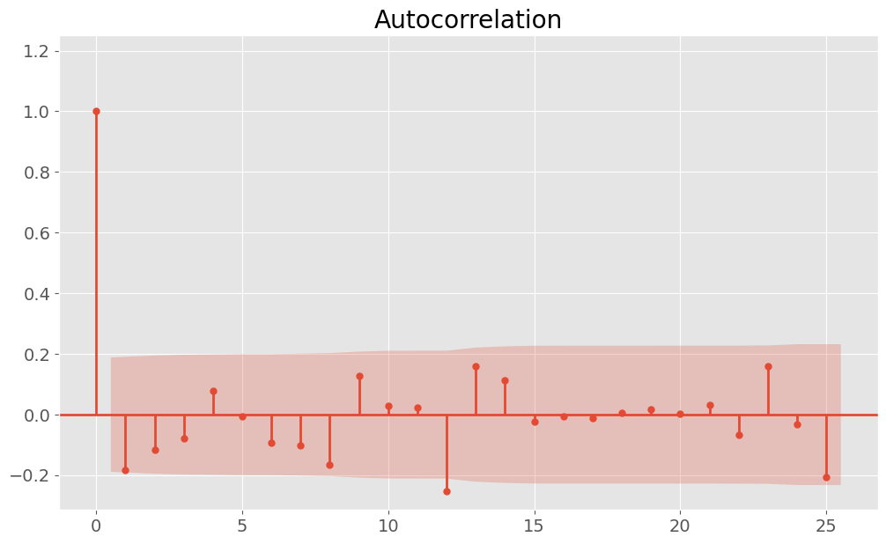
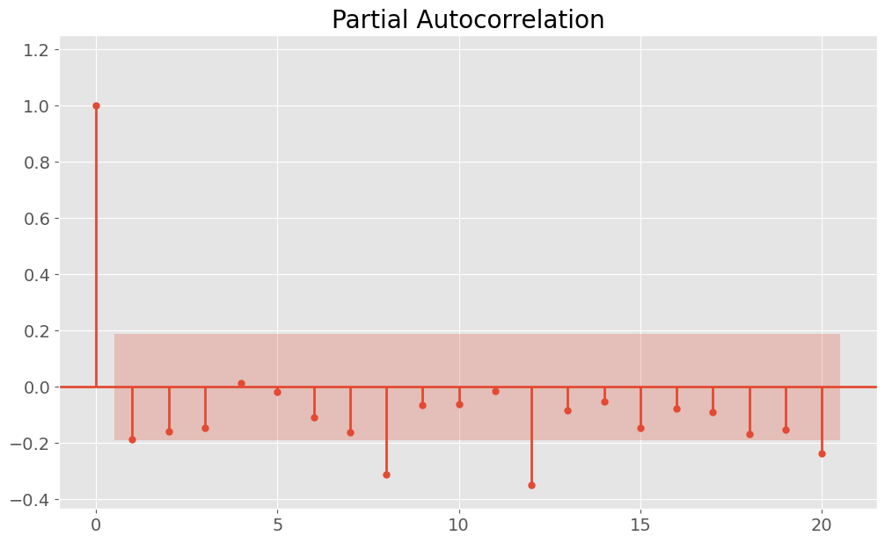

- Our research, given its reliance on available data, focused exclusively on U.S. companies. However, the Big Four auditors – renowned globally – also serve a diverse array of clients from various countries. Consequently, our models and findings may not be universally applicable or generalizable to other countries.
- The dataset used for our study spanned only eight years (2008-2016), which is relatively short. Particularly noteworthy is the absence of data on restatement filings prior to the 2008 Great Recession, a pivotal period marked by significant transformations in financial regulations and auditing practices. It's important to note that the affirmed effectiveness of the Big Four auditors before this financial crisis remains unverified due to this data limitation.
- Our research does not establish causation between Big Four auditors and the occurrence of restatement errors. Numerous other confounding factors could influence this relationship. For instance, many Big Four clients are large, often publicly traded corporations with robust internal auditing teams and seasoned accounting professionals. The lower incidence of restatement errors in these companies may not necessarily be attributed to their association with Big Four auditors but could instead be a result of their comprehensive internal auditing processes.
- The distinction made between Big4 and non-Big4 auditors in our analysis might obscure the variations within these groups. It's important to recognize that not all non-Big4 auditors are the same, and there may also be differences among the Big4 auditors themselves.
- Cleveland, Robert B.; Cleveland, William S.; McRae, Jean E. and Terpenning, Irma. (1990). STL: A Seasonal-Trend Decomposition Procedure Based on Loess. Journal of Official Statistics.
- Durbin, J. (1960). "The Fitting of Time-Series Models". Review of the International Statistical Institute. 28 (3): 233–244. doi:10.2307/1401322. ISSN 0373-1138. JSTOR 1401322.
- Hafen, Ryan. (2016). "stlplus: Enhanced Seasonal Decomposition of Time Series by Loess".
- Hosmer, David W.; Lemeshow, Stanley. (2000). Applied Logistic Regression (2nd ed.). Wiley. ISBN 978-0-471-35632-5.
- Menard, Scott W. (2002). Applied Logistic Regression(2nd ed.). SAGE. ISBN 978-0-7619-2208-7.
- Shumway, Robert H. (2000). Time series analysis and its applications. David S. Stoffer. New York: Springer. pp. 90–91. ISBN 0-387-98950-1. OCLC 42392178.
Executive Summary
This project examines the accuracy of financial statements and the efficacy of auditing practices, with a focus on the prestigious "Big4" auditors - KPMG, Ernst and Young (EY), Deloitte, and PricewaterhouseCoopers (PwC). Utilizing non-public internal restatement error data from over 1,000 U.S. companies and public SEC auditors data for over 3,000 U.S. companies from 2008 to 2016, the study explores restatement patterns across various industries. Techniques such as STL decomposition and ARIMA models were employed to analyze and predict monthly restatement errors. The findings, particularly in the tech industry, indicated a 7% Mean Absolute Percentage Error (MAPE) for the best-performing SARIMA model. Further, the research delves into whether firms audited by Big4 are less likely to issue restatements. Through binary logistic regression analysis, the study finds that non-Big4 auditors are more prone to committing restatement errors across all types, and that companies in the Tech and Finance sectors are more likely to issue restatements than those in other sectors. These findings suggest that Big4 auditors generally provide more accurate auditing results and highlight the importance of auditor choice and industry type in financial reporting accuracy. These insights underscore the superior auditing quality of Big4 firms and highlight industry-specific trends in financial reporting accuracy, offering valuable guidance for investors and companies in understanding and improving financial statement reliability.
Background Introduction and the Data
Financial statements are crucial as they provide vital information about a company's operations and financial status, playing a significant role in assisting investors with decision-making and monitoring. Prior to their publication, these statements are subjected to thorough accuracy checks by auditors. Among the auditing firms, the "Big4" - KPMG, Ernst and Young (EY), Deloitte, and PricewaterhouseCoopers (PwC) - stand out as the most prestigious, typically handling the accounts of large and well-known companies. However, there are instances where auditors may overlook errors in these statements, leading to their publication with inaccuracies. These mistakes, when detected for various reasons, necessitate the issuance of corrected versions of the financial statements, commonly referred to as restatements.
The project utilized two main data sources: non-public internal restatement error data from the UCSD RIA Checkpoint database for over 1,000 U.S. companies and public SEC auditors data for over 3,000 U.S. companies, spanning from 2008 to 2016. The restatement error dataset included key information from 2008 to 2016, such as company ID number, company name, the date when the restatement was announced, three types of accounting errors restated, the industrial sector name, and the industrial sector ID number. Similarly, the SEC auditors file from 2008-2016 contained details about the company ID number, company name, fiscal year of the audit, and the names of the auditors. To effectively combine these two datasets, I used the restatement error data as the foundation and joined them with the SEC data by the company ID number.
ARIMA Modeling for Prediction
Our interest lies in identifying patterns in the filing of restatements. To address this, I aggregated the total number of restatement cases for each month, categorized across three different industries - Tech, Finance, and Others - thereby creating three time series datasets. Subsequently, I conducted STL decomposition with a period of 12 and plotted the associated Autocorrelation Function (ACF) and Partial Autocorrelation Function (PACF) curves for each industry. For instance, the figures below illustrate these analysis for the tech industry:
-


From the plots mentioned above, we can observe the presence of seasonality and trends in the data. After decomposing and removing these elements, the data appeared to behave more randomly. To model and predict the number of monthly restatement errors, I implemented an 80:20 train-test split, ensuring not to shuffle the data to maintain the chronological order. Various ARIMA models were then designed to fit our data, taking into account one lag from the decomposed ACF and PACF. Below is a summary table of the modeling results, including the test Mean Absolute Percentage Error (MAPE)
Our best-performing ARIMA model achieved a Mean Absolute Percentage Error (MAPE) of 7% with a seasonal period of three months. This finding aligns with the seasonality previously identified through STL decomposition.
Binary Logistic Regression Analysis
We then explored a more intuitive research question: Are firms audited by the Big4 (KPMG, EY, Deloitte, and PwC) more or less likely to issue restatements for each error type (Type I, Type II, and Type III) in the U.S.? Put differently, do Big4 auditors achieve better auditing results with fewer errors of each type compared to other auditors? Additionally, we were interested in examining whether firms in different industries are more or less likely to issue restatements for each error type. To address these questions, I conducted binary logistic regression analysis using three models, one for each error type, based on our original merged data. I created two dummy variables (Tech and Finance) to represent three industry levels, with ‘Others’ as the baseline, and another dummy variable (Big4) to distinguish between Big4 and non-Big4 auditors. The initial benchmarking binary logistic regression model included only the Big4 dummy variable, without industry type dummies. Subsequently, we incorporated the two industry type dummies into more complex models. Below is the design of the more complex model for Type I restatement errors:
Based on the Akaike Information Criterion (AIC), the more complex models (AIC = 1237, 1197, 1204) generally fit the data better than the simpler baseline models (AIC = 1452, 1388, 1397). We adhered to the standard 0.05 significance level, and the table below summarizes the results for the three models, including exponentiated estimates for each coefficient:
The analysis of the table revealed significant findings regarding Big4 auditors and industry types. Specifically, non-Big4 auditors were found to be 1.20 times (1/0.83) more likely to commit Type I restatement errors, 1.28 times (1/0.78) more likely to commit Type II restatement errors, and 1.12 times (1/0.89) more likely to commit Type III restatement errors than Big4 auditors, with all other factors held constant. These results suggest that Big4 auditors typically achieve better auditing outcomes with fewer errors across all types compared to other auditors.
Additionally, companies in the Tech industry are 1.17 times more likely to commit Type I restatement errors, 1.13 times more likely to commit Type II errors, and 1.04 times more likely to commit Type III errors than those in the ‘Others’ industry category, again holding other variables constant. A similar trend is observed with companies in the Finance industry, which are generally more likely to commit all three types of restatement errors compared to those categorized under ‘Others’.